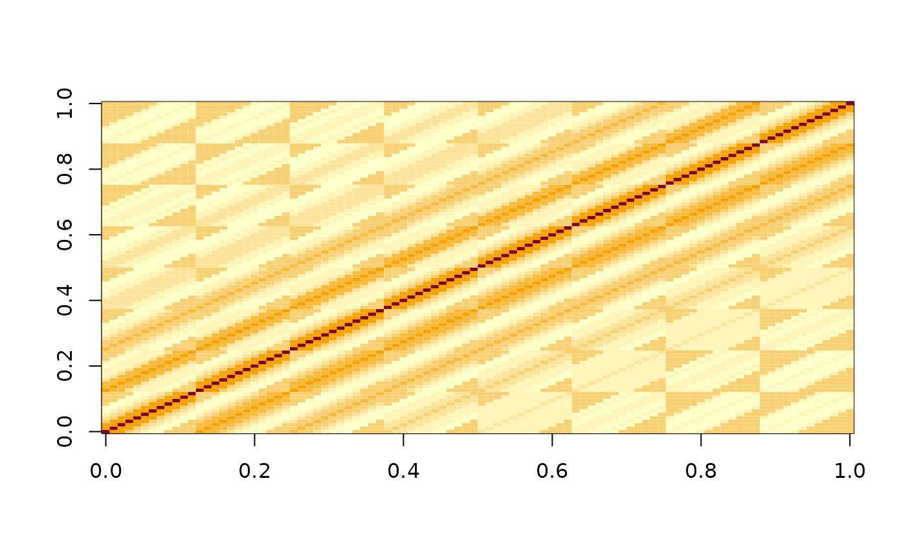

Use the data from a calibration plate, where the plate is empty except for a single well with a luminescent signal, to create a deconvolution matrix that can be used to adjust other experimental results.
rl_calc_decon_matrix(
data,
value,
b_noise,
time = "time",
ref_well = "I05",
well = "well"
)A data frame that contains the data of the calibration plate.
Name of the column containing the luminescent values.
The value of the background noise, which is the average signal for the background wells that are far away from the reference well.
Name of the column with the time values.
The well ID of the reference well (i.e. 'E05', 'I12")
Name of the column with the well ID values.
a deconvolution matrix, for use in rl_adjust_plate()
The deconvolution matrix will be unique for each plate type and plate-reader, so a matrix should be calculated for each combination of plate and plate reader, but once this is calculated, it can be re-used to adjust future experimental results.
fl <- system.file(
"extdata",
"calibrate_tecan",
"calTecan1.xlsx",
package = "reluxr"
)
dat <- plate_read_tecan(fl)
dat
#> # A tibble: 23,040 × 5
#> cycle_nr time_s signal well value
#> <dbl> <dbl> <chr> <chr> <dbl>
#> 1 1 0 OD600 A01 0.0450
#> 2 1 0 OD600 A02 0.0452
#> 3 1 0 OD600 A03 0.0453
#> 4 1 0 OD600 A04 0.0453
#> 5 1 0 OD600 A05 0.0453
#> 6 1 0 OD600 A06 0.0452
#> 7 1 0 OD600 A07 0.0458
#> 8 1 0 OD600 A08 0.0456
#> 9 1 0 OD600 A09 0.0455
#> 10 1 0 OD600 A10 0.0451
#> # … with 23,030 more rows
mat_d <- dat |>
dplyr::filter(signal != "OD600") |>
dplyr::filter(time_s > 500) |>
rl_calc_decon_matrix(value, time_s, ref_well = "E05", b_noise = 30)
image(log10(mat_d))
